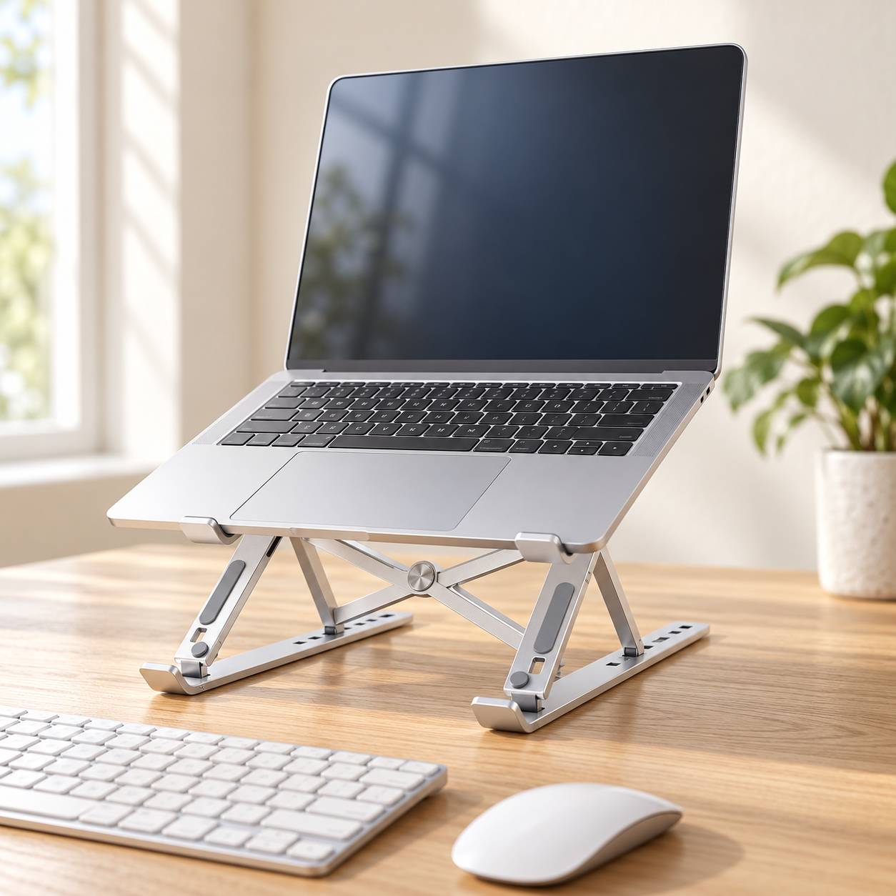
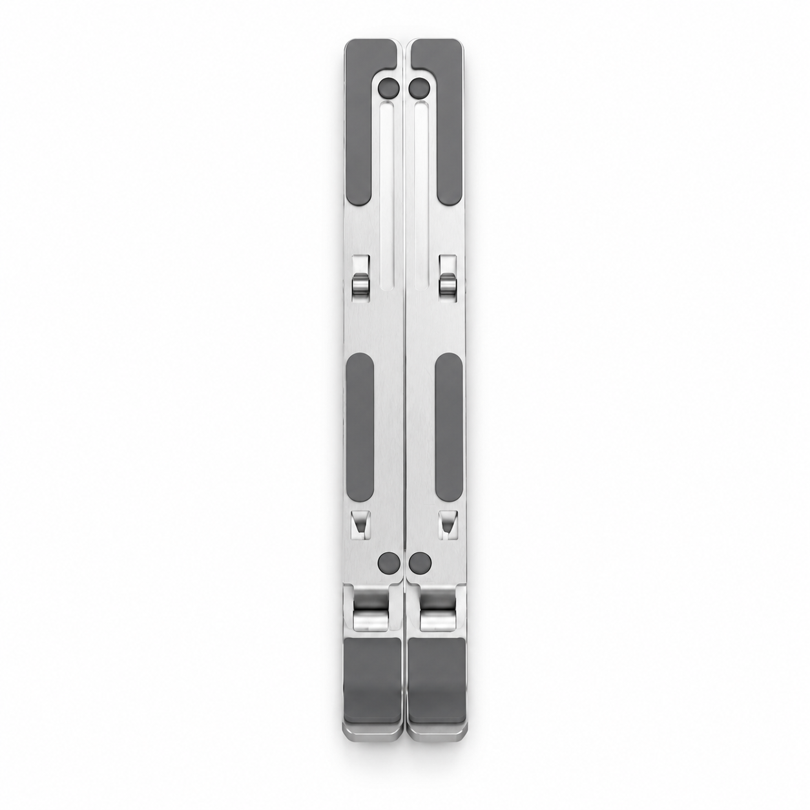
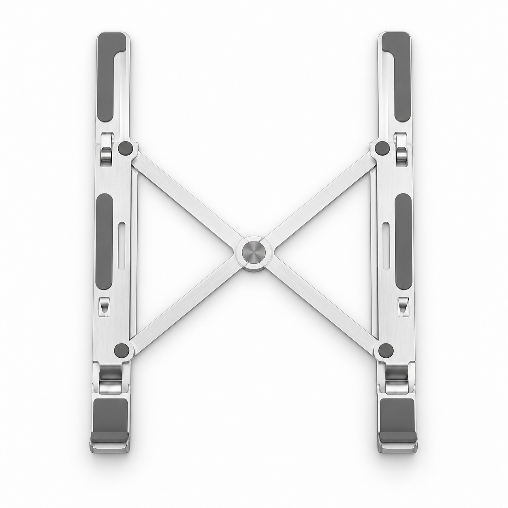
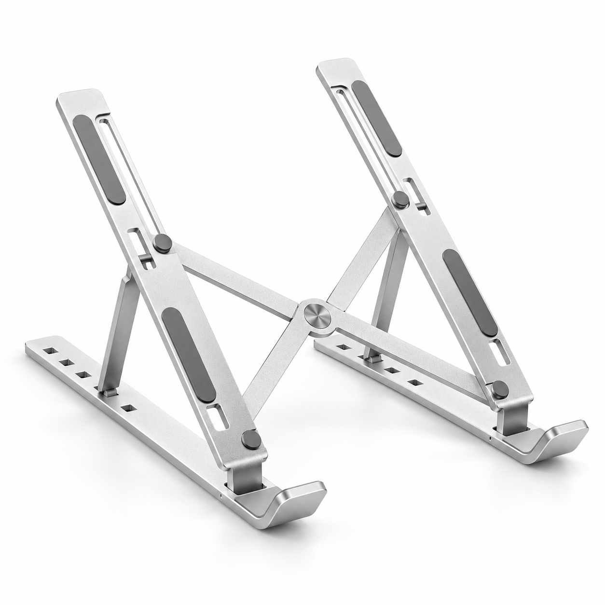
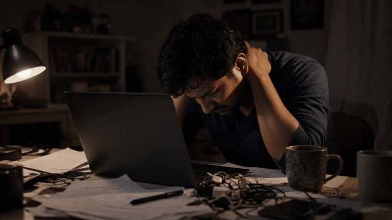
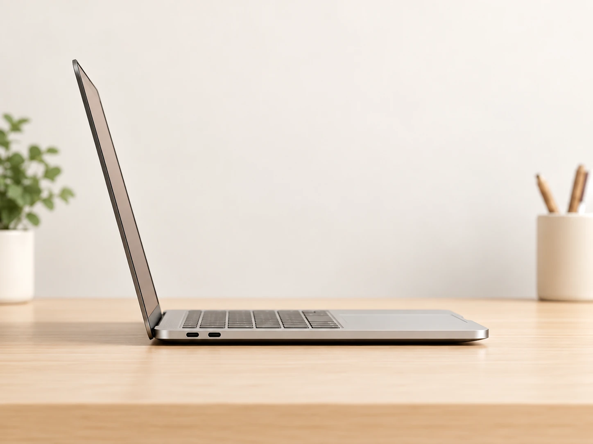
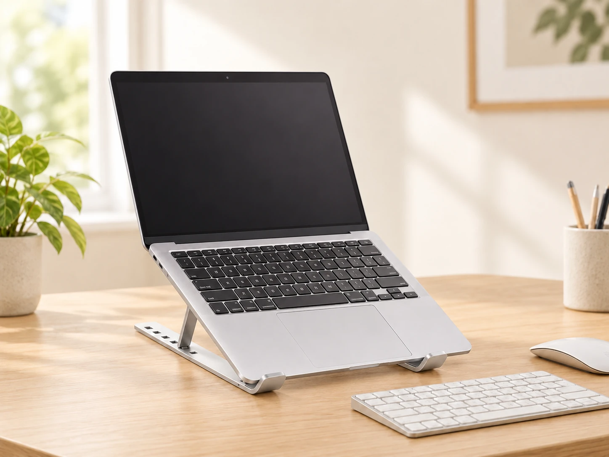

On the desk
NEW LINK · DESK ESSENTIALS
Foldable Aluminium Laptop Stand
Raises your screen toward eye level, then folds flat to carry.
Prefer Cash on Delivery? ₹699
Contact us for delivery dates, returns and warranty details.


Opens in 3 steps



No tools. No assembly. To fold it back, reverse the three steps.
Set it from 6 to 14 cm
Height and tilt change together.
Lowest setting · approximately 6 cm
lowest height (2.3″)
highest height (5.5″)
width (9.4″)
base depth (1.7–6.4″)
Six everyday laptop problems

A better desk setup
Small changes.
Better workdays.
A little lift makes room for more comfort.
Stiff neck by evening
Raise the screen
Slouching for hours
Sit more upright
Laptop heating up
Air moves underneath
Laptop sliding
Pads + front hooks
Stands too bulky
Folds flat, about 500 g
Cluttered desk
Use the space below
A better angle for your workday.
Lift your screen. Make room for a more comfortable setup.
Without a stand

Low screen. Limited space.
Your screen stays close to desk level.
With New Link

Screen up. Desk space back.
Raise the laptop and keep your keyboard at desk level.
Illustrative setup. Comfort is personal; this stand is not a medical device.
Every part has a job

Slide-proof silicone pads
Stays put while typing
Protective front hooks
Helps prevent slipping forward
Height 6–14 cm
Screen where you want it
Base 4.5–16.5 cm
Choose your angle
Triangular design
Steady on the desk
Ventilated open frame
Air under the laptop
Frosted aluminium
Sturdy, about 500 g
Folds flat & thin
Into your laptop bag
Lift it off the desk. Keep it in place.


The open frame allows passive airflow underneath. It is not a powered cooling fan.
Folds flat. Slides into your bag.
About 500 g. Ready for your next desk.


TravelHotel, café, co-working
CampusClass to hostel
OfficeHot-desk friendly
Made for the way India works & studies

Work from home
Raise the screen. Free the table.

Students
Online classes and hostel desks.

Travellers
Folds flat. About 500 g.
Office desks
A tidy setup with space underneath.
Find the right setup
| At a glance | Flat on the desk | Generic plastic riser | New Link aluminium |
|---|---|---|---|
| Screen height | Low | Often fixed | 6–14 cm |
| Angle | Fixed | Usually fixed | Adjustable |
| Air underneath | Flat on desk | Often solid | Open frame |
| Grip | None | Varies | Pads + hooks |
| Carry | Laptop only | Often bulky | Folds flat, ~500 g |
| Build | Laptop only | Plastic | Aluminium |
General, qualitative comparison. Plastic stands vary.
The numbers at a glance
In the box
1 × foldable aluminium laptop stand (silver).
- Material
- Aluminium, frosted finish
- Colour
- Silver
- Height
- Approx. 6–14 cm (2.3–5.5″)
- Width
- 24 cm (9.4″)
- Base depth
- 4.5–16.5 cm (1.7–6.4″)
- Weight
- Approx. 500 g
- Grip
- Silicone pads + front hooks
- Design
- Triangular, ventilated open frame
- Folding
- Folds flat; opens in 3 steps
- SKU
- DS106719
Dimensions are approximate. Laptop compatibility, maximum load, warranty and any additional box contents require confirmation from the seller.
Quick answers
Will it fit my laptop?
The stand is 24 cm wide with front hooks. Contact us to confirm compatibility with your laptop model.
How much weight can it hold?
Please contact us for the confirmed maximum load before ordering.
Will it help my neck?
It helps raise your screen toward eye level. It is not a medical device. For longer sessions, use a separate keyboard and mouse.
Can I adjust height and angle?
Yes. Height is approximately 6–14 cm, with a base depth of 4.5–16.5 cm. Height and tilt change together.
Will my laptop slide?
Silicone pads provide grip, and the front hooks support the laptop edge.
Does it keep my laptop cool?
The open frame lets air move underneath. It is not a fan.
Is it easy to carry?
It folds flat and thin and weighs about 500 g.
Does it need assembly?
No tools or assembly. Open it in three steps.
How can I pay?
The listed price is ₹599 online via UPI, card or net banking, or ₹699 with Cash on Delivery. Contact the seller to arrange payment.
Why is prepaid cheaper?
The ₹100 difference reflects extra COD handling and cash-collection costs.
When will it arrive?
Shipping is free across India. Contact us with your PIN code for dispatch and delivery estimates.
What are the returns and warranty terms?
The PDF leaves the return window and warranty unconfirmed. Please ask the seller for the current terms before purchase.
Still have a question?
Mon–Sun, 8 AM – 8 PM
Raise your screen today.

when you pay online
Save ₹100 vs CODPrefer Cash on Delivery? Available at ₹699.
Free pan-India shipping. Confirm delivery and return terms with the seller.